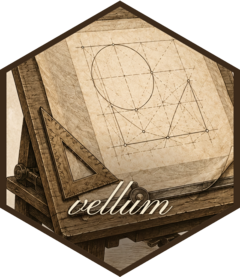

A drawing scene held in the Rust backend. Internal: the public R API is the S7 layer (vl_scene(), grobs, render()), which compiles to this object.
Source: R/extendr-wrappers.R
Scene.RdA drawing scene held in the Rust backend. Internal: the public R API is the
S7 layer (vl_scene(), grobs, render()), which compiles to this object.
Methods
Method new
Create a scene width x height inches at dpi, with background bg
(a length-4 integer RGBA vector). A root viewport covering the whole page
(npc == native) is created as viewport 0.
Method set_a11y
Set the scene-level accessible name / description (a11y). Emitted by the
SVG backend (role="img" + <title>/<desc>) and the tagged-PDF path.
prefix uniquifies the SVG <title>/<desc> ids across a page.
Method want_bitmap_text
Whether the page backend should enable the glyph-bitmap fast path for this render: mode 2 (on) always, mode 1 (auto) above the glyph threshold, mode 0 (off) never. Read from the thread-local mode set by R per render.
Method set_pick
Set the hit-test pick id applied to subsequently-emitted primitives (one
per grob; the R side assigns ids in paint order). See hit_test.
Method set_meta
Set the semantic metadata applied to subsequently-emitted primitives (one per grob). Empty strings clear a field. Emitted by vector backends.
Method push_viewport
Push a viewport as a child of the current one and make it current.
Returns the new viewport's id. If lrow/lcol are >= 0 the viewport is
placed into that (0-based) cell of the parent's layout; otherwise it is
placed by centre/size in parent coordinates.
Method set_clip_path
Attach an arbitrary clip path (in the current viewport's coordinates) to
the current viewport; nper gives the point count of each closed sub-path.
Method set_layout
Attach a row/column layout to the current viewport. Tracks are given as
parallel value + unit-code vectors; the unit "null" marks a flexible
track whose value is its weight. respect enables grid-style aspect
locking (equal physical size for a null width unit and a null height
unit; see solve_layout).
Method rects
A whole batch of rectangles in one call, sharing one gpar. Coordinates and per-coordinate unit codes are parallel slices.
Method circles
A whole batch of circles in one call, sharing one gpar (also used for
points, with the radius carrying the marker size).
Method markers
A batch of markers (point glyphs) sharing one gpar. Like circles but each
element carries a shape code (0 circle, 1 square, 2 triangle, 3 diamond,
4 plus, 5 cross); size is the marker radius. Filled shapes fill+stroke per
gpar; plus/cross are stroke-only. (circle_grob / default points use the
faster circles path; this is for shape variety.)
Method hexagons
A batch of hexagons for hex-binning. flat picks flat-top vs pointy-top;
fill is a flat per-hex RGBA stream ([r,g,b,a, r,g,b,a, ...], one quad per
hex); col/lwd/alpha/stroke give the uniform stroke (the gpar's fill
is unused — fill is per element). Geometry: if w/h are empty each hex is
regular with circumradius size; otherwise w/h are the per-hex full
width/height (corner-to-corner along each axis), resolved per-axis so a hex
can tile a non-square lattice, and size is ignored.
Method sectors
A batch of annular sectors (pie/donut/rose wedges). (x,y) is the centre,
r0/r1 the inner/outer radius, theta0/theta1 the start/end angle in
radians (0 at 3 o'clock, CCW). fill is a flat per-sector RGBA stream
(one quad per sector, like hexagons); col/lwd/alpha/stroke give the
uniform stroke. r0=0 ⇒ pie slice; r0=r1 ⇒ an arc outline (no fill).
Method path
A general path. nper gives the number of points in each closed sub-path
(so holes are sub-paths under the even-odd or winding rule).
Method image
A raster image: rgba is a flat straight-RGBA integer vector (iw x ih,
top-left, 4 per pixel), drawn into a w x h cell centred at (x, y).
Method text
Add pre-shaped text. The R wrapper does shaping (via textshaping) and
passes per-glyph ids/positions/fonts plus the block size.
Method texts
Add a whole batch of pre-shaped text labels in one call (one shaping pass
on the R side, one FFI here). Glyphs are flat across all labels, split by
nper (glyph count per label); positions/sizes/rot/labels are per-label;
font + just + colour are shared.
Method texts_rich
Like texts, but with a per-glyph fill colour stream (gcol, a flat RGBA
int stream, 4 ints per glyph, parallel to the glyph arrays). Used by rich
(multi-run) labels where colour varies within a single label. Everything else
matches texts; the shared col becomes the fallback only when a glyph's
colour is absent (it never is here, but keeps the gpar resolve consistent).
Method mask_begin
Begin collecting a mask's content for the current viewport. Until the
matching mask_end, primitives are routed into the mask instead of the
drawn scene. kind is 0 (alpha) or 1 (luminance). Returns its index.
Method group_start
Open an isolated compositing group, modulated by mask index mask
(negative = no mask, just isolation), group opacity alpha, and blend mode
blend (a code; 0 = normal). Routed through emit_node so a group nested
inside a mask (a mask grob that itself masks a viewport) lands in the same
node list as its content, keeping markers and content in sync.
Method begin_panel
Open a named panel group around the following nodes (paired with
end_panel). The SVG backend wraps them in <g data-vellum-panel="name">;
other backends ignore it. Emitted by the R compiler for named viewports.
Method subraster_start
Open a repaint boundary for the current subtree, tagged with content id
nid (a per-subtree token from R). See Node::SubrasterStart.
Method render_png
Render the scene to a PNG file. Returns any degradation warnings (none for the raster backend today; uniform with the SVG/PDF signatures).
Method render_svg
Render the scene to an SVG file. outline_text emits glyph outlines
instead of selectable <text> (pixel-faithful, matches raster/PDF).
Returns any degradation warnings.
Method render_svg_string
Render the scene and return the SVG document as a string (rather than
writing it to a file). Same output as render_svg; the interactivity
layer needs the markup in-memory to embed it in an htmlwidget, and tests
use it to assert on emitted attributes. Degradation warnings are dropped
here (the file path surfaces them); callers wanting them use render_svg.
Method render_pdf
Render the scene to a PDF file. Returns any degradation warnings (e.g. a tiling pattern or mask the PDF walk could not honour).
Method rgba
Render and return the whole image as row-major RGBA bytes
[r, g, b, a, ...] (top-left origin, x fastest).
Method content_bbox
Render and return the tight bounding box of non-transparent content as
c(min_x, min_y, max_x, max_y) (device px, inclusive), or an empty vector
if nothing was drawn. Used to measure a grob's extent (grobwidth/height).
Method resolved_geometry
Resolved per-viewport geometry for the debug overlay / why_size(). Runs
the layout pass and returns, per viewport (row = viewport id), its parent
id, local pixel size, affine transform (c(sx, ky, kx, sy, tx, ty) mapping
local px -> device px), solved layout track edges (local px, plus the
respect centering offset), and the device-px bbox of its innermost clip.
R joins this with the viewport names it recorded during compilation.
Method element_table
Per-element device-px bounding boxes for the batched mark nodes (the ones
that can carry data keys): rects, circles, points/markers, hexagons,
sectors, segments. Rows are emitted in paint order (the compiler's DFS),
one per drawn element — the same order and count the R grammar enumerates,
so scene_model() zips this with R-side semantics positionally (and
cross-checks the key column). Columns: key ("" = none), enclosing
panel ("" = none), and device-px bbox x0,y0,x1,y1 (y-down). Sector boxes
use the outer-radius disk and hexagon boxes the circumscribed extent — safe
over-approximations sufficient for a spatial index.
Method hit_test
Hit-test: return the pick id of the topmost primitive covering device pixel
(x, y), or -1 if none. Implemented as a colour pick-buffer — each node is
drawn opaque (AA off) in a colour encoding its pick id, respecting clips and
paint order, then the pixel is decoded — so it is geometry/clip/overlap
exact. Markers and text use a bounding box; lines/segments a pick band.